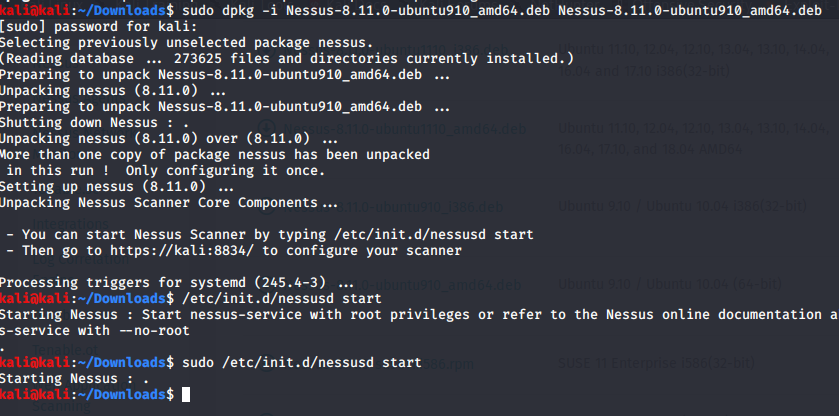

its a vulnerability scanner
good for external assessment
like this could be the first thing u would do 'as this takes time to be done
also used for internal assessment
installed nessus for ubuntu 64 bit
went ot downloads folder

dpkg means depackaging
go to https://kali:8834/
and then register nessus
we get free version through which can scan all private ports and upto 16 at a time
here 's what we get :
cant scan an external site or website
go in new scan and click on basic scan

in discovery change this

in assessment go to

launch this scan and then
go to new scan
go to advanced scan
just see the contents:
meanswhile pehle ke scan aisa aaya

finally we get this

thus can add below stuff in notes:

installled version uis outdated na hence can contain vulnerabilties
one more we got :

thus u could perfirm an overflow on it too
now we got so many vulnerabilities :
if u dont get severe type of the then even report the medium and low ones too
go to export and then download nessus file and give to client
bt never trust these vulnerabilities scannner like go and actuallly check ki jo versions they say and samajh
we wouldnt provide an ss of nessus ka output we would actually go and checkk
and prove ki that vulnerability is there
and prove ki they are out of date
thus its gud to have a vulnerability scannner which gives u all the vunerabilities
just an extralayer of vulnerability tester
now we ll start main stuff